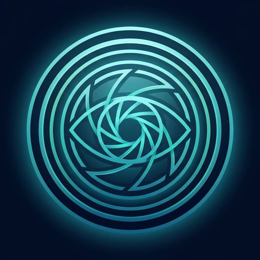

Komşu neler fark etti?
Ortamda bir hareket olduğunda yapay zekâ sahneyi anlatır ve saatiyle buraya ekler.
- Yükleniyor…

Komşu by aymam.aiKomşu, sıradan bir kamerayı akıllı bir asistana dönüştürür — hareketi izler, gördüklerini not eder, sorularınızı yanıtlar ve belirlediğiniz durumlarda size haber verir.
Ortamda bir hareket olduğunda yapay zekâ sahneyi anlatır ve saatiyle buraya ekler.
Komşu sıradan bir güvenlik kamerasıyla çalışır: hareketi izler, gördüklerini not eder, sorularınızı yanıtlar ve belirlediğiniz durumlarda size haber verir — web sitesinde, WhatsApp'ta ve Telegram'da. Tıpkı sizin için göz kulak olan bir komşu gibi.
Kameranıza Komşu'yu ekleyin